unity · c# · versus
Gameplay Programmer · Level Designer · UI Programmer · Game Designer
Take on your friends in a 1-vs-1 soccer arena! Get tricky: bend your shots off the walls, or stun your opponent by slamming the ball right into them to open up an easy goal.
Hit, dash, pull and defend your net in a fast, competitive best-of-3, each round played to 5 points — seize the advantage and show them who's the best Blitzer of the two of you!
A versus arcade game where two players fight to score by making the ball bounce across the arena. Master the bounces and ball effects to curve your shots, fool your opponent and land the perfect goal.
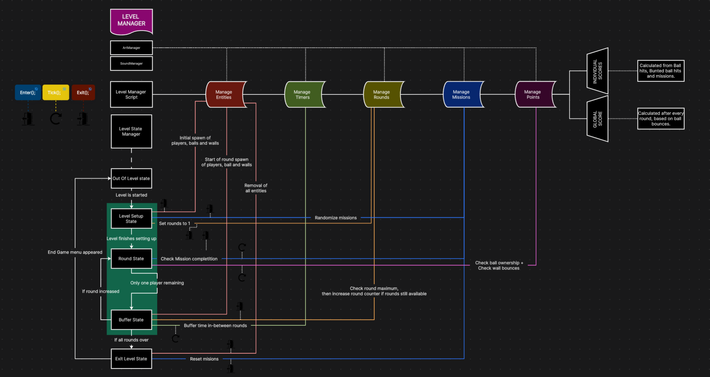
System · Scene management
To keep level transitions clean, a single Level Manager drives every level from one shared setup — no per-scene reconfiguration.
System · Player data
Every player is a self-contained data entity the whole game reads from — the character on the field is just the visible tip of it.
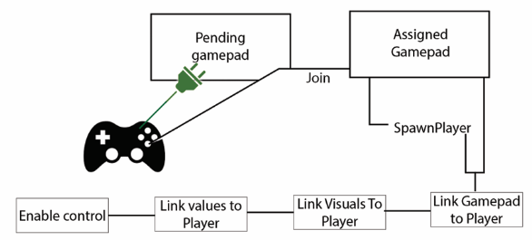
Input · Local multiplayer
Controller pairing runs in three steps to reliably bind each gamepad to its player.
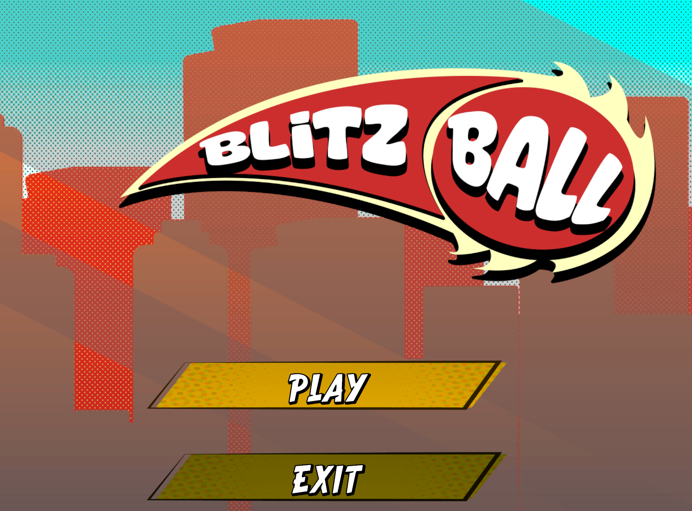
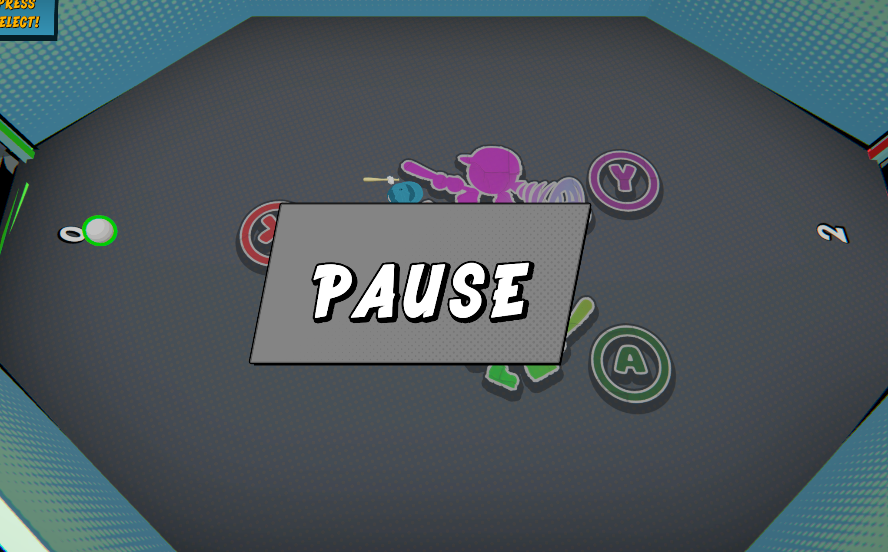
UI · Menus
The everyday flow around a match — a start menu to launch or quit the game, and a pause overlay to freeze it mid-round.
Game feel · Juice
The game feel improves with the player's mastery of the controls and the evolving tempo of the round, gradually drawing the player into a deep flow state. In this context, the feeling of "playing well" becomes a challenge and a goal in itself.
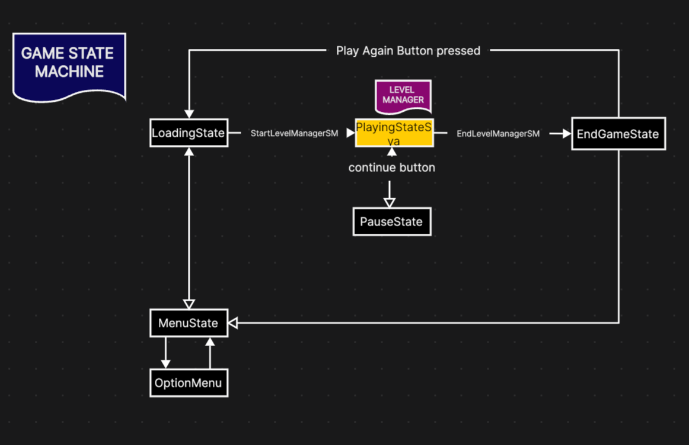
Architecture · State machine
A single script that drives the whole game, always knowing exactly which state it is in — menus, loading, in-game, pause or end game.
The arenas are the heart of the level design. I built each one as a blueprint first — walls, angles and goal placement — then integrated it in-engine. Placed schema next to final, the three levels show how the playfield grows from a clean symmetric shape to increasingly tricky geometry, giving the bounces more and more room to get vicious.
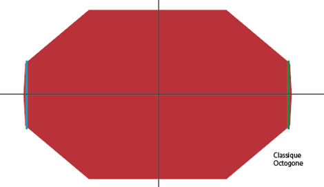
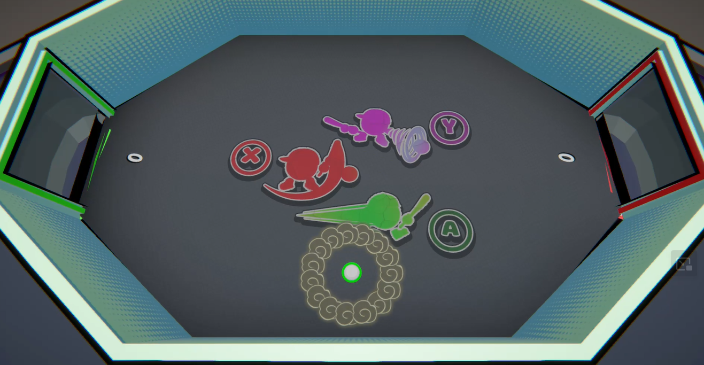
Level Design · Level 1
The starting arena — a clean, fully symmetric octagon with no obstacles, so players learn the bounces on a fair, readable field.
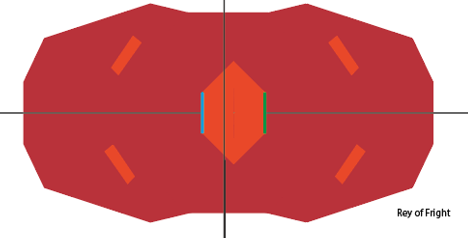
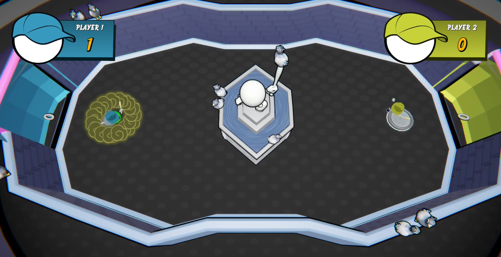
Level Design · Level 2
Raises the stakes with a central hazard and angled deflectors that break the straight lines of the octagon.
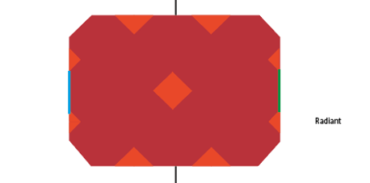
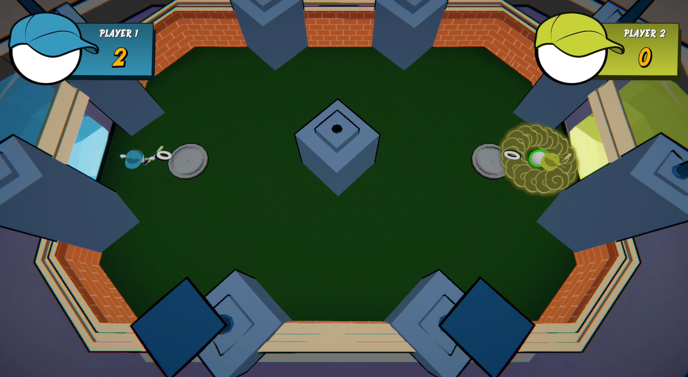
Level Design · Level 3
The most technical arena — a wider, angular playfield lined with deflectors and cover, built for the sneakiest bounces.
Playable build, itch.io page or source code — add your links here.